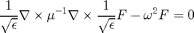

solve_mode_ex
Shows how an eigenmode of a 3D structure can be obtained using Maxwell.
Contents
Description
Finds the eigenmode of a 3D ring resonator.
% Make this a function instead of a script to allow for nested function definitions. function [E] = solve_mode_ex(cluster_name, num_nodes)
Create the simulation
We use the add_planar and stretched_coordinates functions to create our structure as well as our simulation grid.
dims = [80 80 40]; % Size of the simulation. omega = 0.18; % Frequency of the simulation. % Create a ring epsilon structure. my_shapes = {struct('type', 'rectangle', ... 'position', [0 0], ... 'size', [1e9 1e9], ... 'permittivity', 1), ... struct('type', 'circle', ... 'position', [0 0], ... 'radius', [24], ... 'permittivity', 12.25), ... struct('type', 'circle', ... 'position', [0 0], ... 'radius', [14], ... 'permittivity', 1)}; epsilon = {ones(dims), ones(dims), ones(dims)}; epsilon = add_planar(epsilon, 6, dims(3)/2, my_shapes); % Plot the structure. xyz = 'xyz'; for k = 1 : 3 subplot(2, 3, k+3); imagesc(epsilon{k}(:,:,dims(3)/2)'); axis equal tight; % imagesc(squeeze(epsilon{k}(:,dims(2)/2,:))'); axis equal tight; % Cross-section. title(xyz(k)); colormap gray end snapnow; % Create the s-parameters. [s_prim, s_dual] = stretched_coordinates(omega, dims, [10 10 10]); % Create the current source this is only used to get v_guess for the mode solver. J = {zeros(dims), zeros(dims), zeros(dims)}; J{1}(22, 40, dims(3)/2) = 1; % Point source inside ring. % Permeability. mu = {ones(dims), ones(dims), ones(dims)}; % Initial guess of zero for all solves. E0 = {zeros(dims), zeros(dims), zeros(dims)};
Form matrices and function handles
We now form the necessary linear algebra components and function hanles to solve the system using eigenmode_solver.
We actually used a modified electromagnetic wave equation where ,

% Get ingredient matrices and vectors. [A1, A2, m, e, b] = maxwell_matrices(omega, s_prim, s_dual, mu, epsilon, J); % Helper functions. n = prod(dims); vec = @(z) [z{1}(:); z{2}(:); z{3}(:)]; my_diag = @(z) spdiags(z(:), 0, numel(z), numel(z)); unvec = @(z) {reshape(z(1:n), dims), reshape(z(n+1:2*n), dims), reshape(z(2*n+1:3*n), dims)}; % Compose function handles. mult_A = @(x) e.^-0.5 .* (A1 * (m.^-1 .* (A2 * (e.^-0.5 .* x)))); mult_A_dag = @(x) (e.^-0.5 .* (A2.' * (m.^-1 .* (A1.' * (e.^-0.5 .* conj(x)))))).'; function [x] = solve_A_shifted(lambda, b) % Solves for the F-field. omega = sqrt(lambda); J = unvec(-i * omega * b); subplot (2, 2, 1); E = maxwell.solve(cluster_name, num_nodes, omega, s_prim, s_dual, mu, epsilon, E0, J, 1e4, 1e-6); x = sqrt(e) .* vec(E); end % solve_A_shifted = @(lambda, b) (A - lambda * speye(3*n)) \ b; % In-line function for visualization of progress. function my_vis(lambda, v) colormap jet x = v ./ sqrt(e); for k = 1 : 3 E{k} = reshape(x((k-1)*n+1 : k*n), dims); subplot(2, 3, k+3) imagesc(abs(E{k}(:,:,dims(3)/2))'); axis equal tight; % abs looks better than real :). title(xyz(k)); end subplot(2, 2, 2); end % Solve to get v_guess. v_guess = solve_A_shifted(omega^2, b); my_vis(omega^2, v_guess) snapnow;
The figure above shows our initial v_guess, which we have obtained via simulation.
Run the eigenmode solver function
% Find the eigenmode
[lambda, v] = eigenmode_solver(mult_A, @solve_A_shifted, @my_vis, v_guess, 10, 1e-6);
snapnow;
Here we obtain one of the eigenmodes of the ring resonator.
Obtaining the right eigenvector
This is made possible through the symmetrization matrix S, via

% Form symmetrization matrix S. [spx, spy, spz] = ndgrid(s_prim{1}, s_prim{2}, s_prim{3}); [sdx, sdy, sdz] = ndgrid(s_dual{1}, s_dual{2}, s_dual{3}); S = my_diag([sdx(:).*spy(:).*spz(:); ... spx(:).*sdy(:).*spz(:); ... spx(:).*spy(:).*sdz(:)]); % Obtain right eigenvector. w = conj(S * v); % Display error. fprintf('Error of left eigenvector: %e\n', norm(mult_A(v) - lambda * v) / norm(v)); fprintf('Error of right eigenvector: %e\n', norm(mult_A_dag(w) - lambda * w') / norm(w)); % fprintf('Error of right eigenvector: %e\n', norm(w' * A - lambda * w')/norm(w)); % Return the E-field. E = vec(v ./ sqrt(e));
end